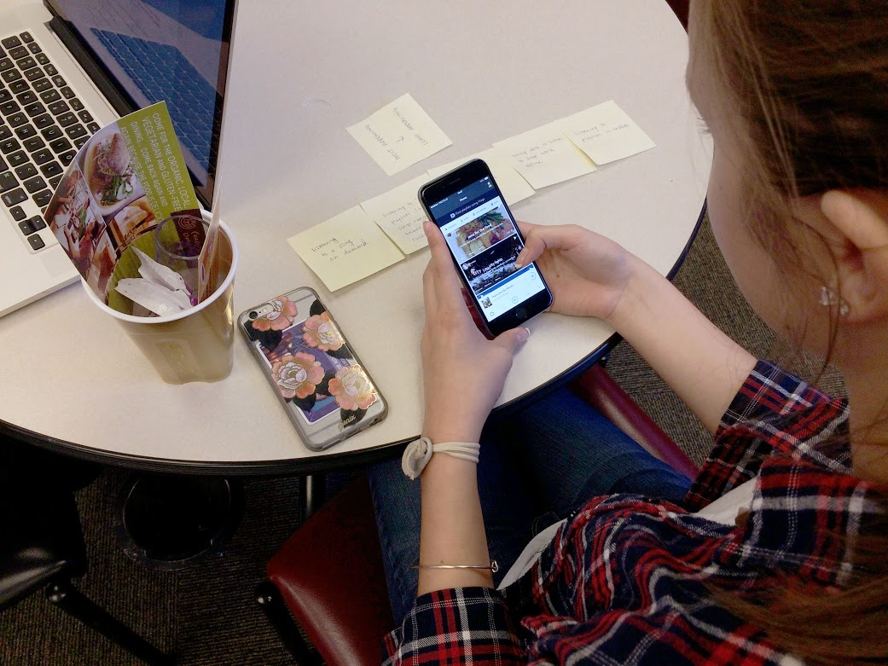

At Napster, I was on the product team defining a new music streaming product with the working title “Napster X.”
The objective was to create a music app that would:
- appeal to a different, younger demographic than the flagship Napster product, and
- have a monetization strategy between “completely free” and “monthly subscription” which would appeal to users who don't pay to listen to music.
Role & Process
I created and owned a user testing process for vetting concepts and features via weekly in-person studies, remote testing, and surveys. After a year of research, we had surveyed around 3,000 individuals, and talked face-to-face with over 200+ students in our target demographic.
A guerilla testing session that included a high-fidelity prototype and a card sort activity
When anyone on our team had an idea for an app feature, we brainstormed concepts together. After I created initial sketches, we proposed questions to investigate about the concept, as well as hypotheses that to target for user testing.

Initial whiteboard sketches, questions, and hypothesis for a "tour guide" feature
We tested hypotheses with surveys or guerilla testing at a nearby university. Prototypes could be low- or high-fidelity, and I created them using paper and pencil, Proto.io, Sketch, and Pixate.
To challenge our assumptions and firm up our knowledge on topics we knew little about, we also used interviews, card sorts, and contextual inquiries.

A paper prototype for a playlist maker design
Prototype screens
After user research of any kind was completed, I summarized research findings and design recommendations for company-wide distribution.
Once iterations provided a design that was considered the best for reaching our goals and KPIs "in the wild," I defined technical requirements for features to hand off to development.
Microtransactions
One of the main goals of the app was to incorporate microtransactions. One of the major challenges of the product was to figure out a monetization strategy that (frankly) would not be despised on sight by the target audience.
With routine and thorough user testing, we found the best way to incorporate microtransactions such that users would find them novel and appealing, rather than unexpected and threatening. Over many months, we developed an economy that users initially hated into one that they considered novel, exciting, and convenient.
They began to describe the app and its monetization system exactly as business goals wanted it to be, as an app somewhere between free and fully-paid: “You don’t have to be a monthly subscriber. You don’t have to be stuck in a subscription, it’s a lot more temporary.”
A card sort relating to microtransactions
Research Feedback
While iterating on microtransactions design:
“I don’t really like the credit aspect. SoundCloud is great because it doesn’t charge you to play music.”
“[If I saw this design, my reaction would be:] No thanks, then remove the app, then go back to Spotify. I’m not interested in the whole idea of credits. I can already listen to free music and make playlists from different apps so I’m not sure why I would stay.”
“If you had to constantly change the song, or decide what credits to use, that would get in the way. Managing credits gets in the way of the music.”
With improved microtransactions design:
“It is free and you can earn credits to skip ads. It is perfect for someone who doesn't have a lot of money.”
“I hate ads and I like having the ability to not listen to them without having to pay each month for that privilege.”
“[The way credits work in this app] seems a more comprehensive and convenient plan compared to the alternatives.”
“I think this is really cool. You can use credits to be premium. I’ve never seen that before, it’s pretty cool!”